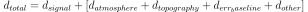

Spool (GUI)¶
InSAR displacement scenes are complex visual datasets, the Spool user interface offers interactive and intuitive analysis and parametrization of all aspects of the container
Note
Naming conventions in the GUI represent the kite.Scene syntax!
A usage scenario for the scenario could look like this - start the GUI:
spool test/data/20110214_20110401_ml4_sm.unw.geo_ig_dsc_ionnocorr.mat
Note
The dataset test/data/20110214_20110401_ml4_sm.unw.geo_ig_dsc_ionnocorr.mat is part of the Github repositorium.
Parametrization of the Quadtree and Covariance through the interface is shown in the latter paragraphs of this page.
From spool one can save the scene and it’s quadtree and covariance parametrization through . Let’s save the scene as /tmp/myanmar_2011.[npz,yml].
Now we can utilize kite‘s python framework to work with the subsampled quadtree and errors/weights.
from kite import Scene
sc = Scene.load('/tmp/myanmar_2011.yml')
# Get the total leaf weight
leaf_weights = []
for l in sc.quadtree.leafs:
leaf_weights.append((l.id, l.weight))
# sc.covariance.getWeight(l) == l.weight
# True
# Get the covariance
cross_weights = []
for l1 in sc.quadtree.leafs:
for l2 in sc.quadtree.leafs:
w = sc.covariance.getLeafCovariance(l1, l2)
cross_weights.append((l1.id, l2.id, w))
Displacement¶
The first tab offers simple data inspection of plain parameters. From the side menu we can choose displacement, Line of Sight incident angles and unit their georeferenced unit vectors. display offers the components displacement, phi, theta, thetaDeg, degPhi, unitE, unitN, unitU.

An unwrapped InSAR displacement scene from a 2011 Myanmar strike-slip event (Sudhaus and Gomba, 2016 [1]). Red color shows displacement away from the satellite, blue displacement towards LOS.
Quadtree¶
The Quadtree subsamples the InSAR displacement in order to have a reduced and thus more manageable dataset for modelling.
The four parameters characterizing the quadtree can be controlled through the gui (see also Quadtree parametrisation)
- epsilon/std threshold (
epsilon) - Fraction of NaN values within (
nan_allowed) - Maximum and minium dimension of the tile
(
tile_size_maxandtile_size_min)

Interactive quadtree parametrization through the spool GUI. Shown here is the mean displacement of the leafs (kite.quadtree.QuadNode.mean).
To get a feel for the covariance and error estimation we can have a look at the absolute weights of the leafs (see kite.quadtree.QuadNode.weight or kite.Covariance.getLeafWeight()).

Absolute weight of each QuadNode derived from Covariance. Yellow is low weight, blue are higher weighted leafs.
Covariance¶
The covariance of the InSAR scene is a measure for the noise which affects our deformation signal. In order to generate a reasonable geodynamic model we need to quantify the contribution of noise to our signal. A common model for the noise contributionin satellite interferometry is:


Covariance parametrization through the GUI. The center panels shows the noise selector (green), the 2D plots illustrate (from top) covariance_func, structure_func and the noiseSpectrum().

Right click on the noise spectrum or brings up the noise inspection window showing noise_data. Before the Fouriere transformation the data is deramped in 2D as well as demeaned.
References
| [1] | Sudhaus, Henriette and Gomba, Giorgio (2016) Influences of ionospheric disturbances in L-band InSAR data on earthquake source modelling. Living Planet Symposium 2016, 9-13 May 2016, Prague, Czech Republic. |